Introduction
Terrain simulates a land mass in your game which can be occupied, traversed, or flown over by objects in your game world. Terrain is represented in a game level by a TerrainBlock.
In order to follow along with this article using World Builder, you must either create a new game project or open an existing project.
There are three methods to add a TerrainBlock to a level: (1) Create a
blank terrain; (2) Add an existing .ter file; and (3) Import a heightmap.
Creating Blank Terrain
To create a new blank terrain start from the menu by selecting File>Create Blank Terrain.
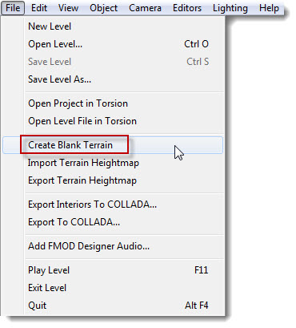
After you click the menu entry, a Create New Terrain Dialog will appear.

The Name field allows you to specify a name for your TerrainBlock. This name will appear in the Scene Tree and can be used to reselect your terrain later for editing. Enter a name for the terrain in the text box, in this example theterrain.
The Material for the terrain, that is the texture that will be displayed to depict the ground cover, is selected using a drop-down list. This list is populated by the World builder with all the existing materials created specifically for terrains.
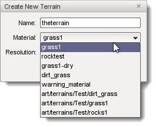
The Resolution that you select from that drop-down list determines the size of the terrain that will be created. The size of the terrain that you choose is largely dependent on the design of your game. You will have to experiment to find the right size that works for each game you create and some combinations of options are not very practical. For example, selecting a terrain size of 256 and using the Noise option will result in a terrain that is so drastically contoured that it will not be of much use.
The radio buttons to the right of the Resolution dropdown determine the smoothness of the terrain that is generated. Selecting Flat will create a relatively smooth terrain and selecting Noise will generate a bumpy terrain.
Creating a Flat Terrain
To create a flat terrain: from the main menu select File > Create Blank Terrain; enter a name; select a material; select a size such as 256; and select the Noise radio button, then click the Create New button. A contoured TerrainBlock will be generated and automatically loaded into the scene.
(click to enlarge)
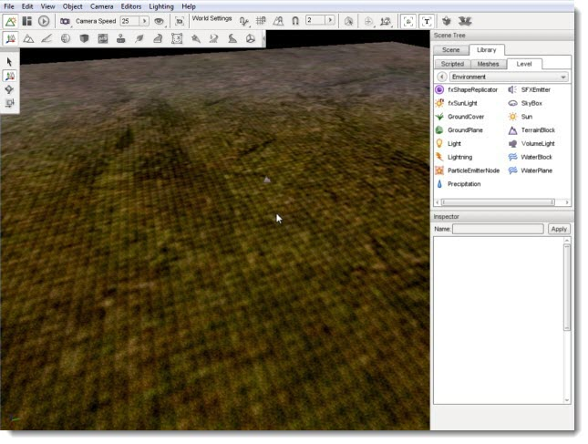
A Flat terrain is a great place to start, but is more suitable for terrains that will remain relatively flat. Using a flat terrain requires you to create all the terrain details yourself using the Terrain Editor.
Creating a Bumpy Terrain
To create a bumpy terrain: from the main menu select File>Create Blank Terrain; enter a name; select a material; select a larger size such as 1024; and select the Noise radio button, then click the Create New button.
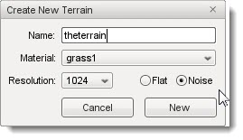
TerrainBlock loaded into the scene. A contoured extremely mountainous terrain will be generated and automatically loaded into your scene. The noise algorithm randomly generated the hills and valleys for you.
(click to enlarge)
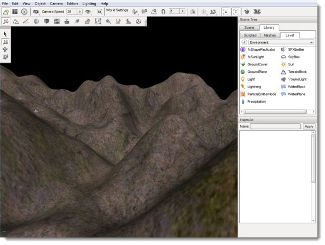
Starting with a contoured terrain this is a decent method of starting from scratch with a little randomness thrown in.
Adding an Existing Terrain File
To add an existing terrain file to a level start by selecting the Object Editor tool. Locate your Library panel and click it. Click on the Level tab then select the Environment folder. Once that is open, locate the TerrainBlock entry, and double-click it.
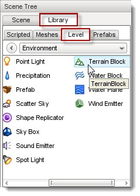
The new terrain dialog will open.

The Object Name field allows you to specify a name for your TerrainBlock. This name will appear in the Scene Tree and can be used to reselect your terrain later for editing. Enter a name for the terrain in the text box, in this example theterrain.
The Terrain file box indicates the information file which holds the data describing the terrain to be loaded. Clicking the box loads the OS file browser.
Terrain files are named with a .ter extension. The .ter file type is a proprietary format that contains terrain data understood by Torque 3D. Locating a .ter file then clicking Open/OK will cause it to be selected as the Terrain file to be loaded.
(click to enlarge)

Leave the square size in the dialog set to its default value then click OK. The .ter file will be immediately imported into your scene with both geometry and textures. The sample shown here is a very simple and low detailed terrain file.
(click to enlarge)
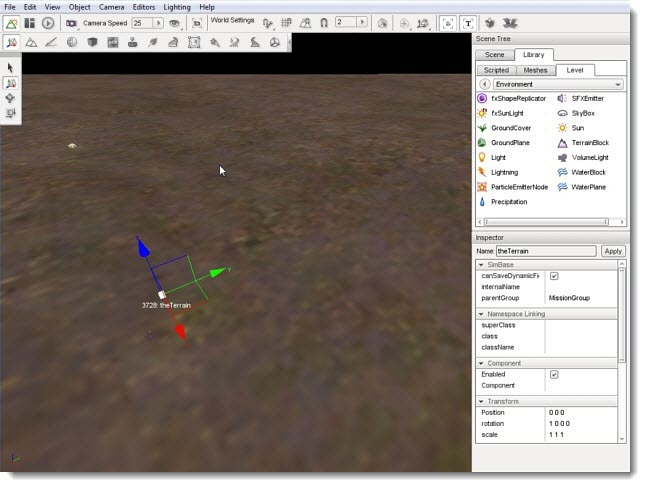
Importing a Terrain
The most recommended and effective method to add a TerrainBlock to a level is to import the terrain from external data files. However, this method requires the skill and the third-party tools to create those data files. Very high-quality and professional-looking terrain can be created with tools such as L3DT and GeoControl. These tools allow you to generate extremely detailed heightmaps that can be imported by Torque 3D and to generate terrain data.
There are several types of asset required to import and use a terrain in Torque 3D using this method: (1) a heightmap, (2) an opacity map and layers, and (3) texture files.
Heightmaps
The primary asset required is a heightmap. A heightmap is a standard image file which is used to store elevation data rather than a visible picture. This elevation data is then rendered in 3D by the Torque engine to depict the terrain. The heightmap itself needs to be in a 16-bit greyscale image format, the size of which is a power of two, and must be square. The lighter an area of a heightmap is, the higher the elevation will be in that terrain location.
Example Heightmap

Opacity Maps
An opacity map acts as a mask, which is designed to assign opacity layers. Opacity layers need to match the dimensions of the heightmap. For example, a 512x512 heightmap can only use a 512x512 opacity map.
If the opacity map is a RGBA image, four opacity layers will be used for the detailing (one for each channel). If you use an 8-bit greyscale image, only a single channel. You can then assign materials to the layers. This allows us to have up to 255 layers with a single ID texture map, saving memory which we can apply to more painting resolution.
Notice that the following example Opacity Map resembles the original heightmap.
Example Opacity Map
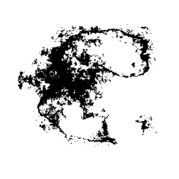
Texture Files
Texture files "paint" the terrain giving it the appearance of real ground materials. When creating a terrain from scratch textures can be manually applied to it using the Terrain Painter, which is built into the World Editor, but that is a time and effort intensive method. Instead of hand painting them, the opacity layer will automatically assign textures to the terrain based upon what channel they are loaded into.
For each type of terrain to be rendered you will want to have three textures: (1) a base texture, also referred to as a diffuse texture, (2) a normal map, and (3) a detail mask.
Diffuse
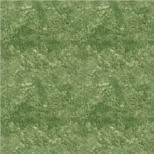
Normal

Detail

The base represents the color and flat detail of the texture. The normal map is used to render the bumpiness or depth of the texture, even though the image itself is physically flat. Finally, the detail map provides up-close detail, but it absorbs most of the colors of the base map.
Importing a Heightmap
To import a heightmap for terrain start the World Editor, then from the menu select File > Import Terrain Heightmap:
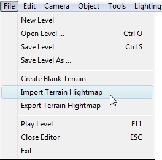
The Import Terrain heightmap dialog will appear.
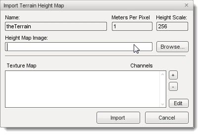
Name: If you specify the name of an existing TerrainBlock in the dialog it will update that existing TerrainBlock and its associated .ter file. Otherwise, a new TerrainBlock will be created.
Meters Per Pixel: What was the TerrainBlock SquareSize (meters per pixel of the heightmap), which is a floating point value. It does not require power of 2 values.
Height Scale: The height in meters that you want pure white areas of the heightmap to
present.
Height Map Image: File path and name of a .png or .bmp file which is the heightmap itself. Remember, this needs to be a 16-bit greyscale image, the size of which is a power of two, and it must be square.
Texture Map: This list specifies the opacity layers, which need to match the dimensions of the heightmap image. If you add an RGBA image it will add 4 opacity layers to the list, one for each channel. If you add an 8-bit greyscale image, it will be added as a single channel.You can then assign materials to the layers. If you do not add any layers
or do not add materials to the layers, the terrain will be created with just the Warning Material texture.
Click the browse button to the right of the Height Map Image box to open a file browser dialog. Navigate to where your terrain files are located, select the desired heightmap PNG file, then click Open. The selected heightmap file will be entered in the Height Map Image box.
(click to enlarge)

Click on the + button next to Texture Map to open
another file browser. This is where you add opacity
layers. Start by locating the masks. If you have the right assets, it should resemble something like this:
(click to enlarge)

Do not worry if you do not see the detail. The mask is
supposed to be solid white. Repeat the process until you have imported all your opacity layers.
Now that our opacity layers have been added, you should assign a material to each one. You can do so by clicking on one of the layers, then clicking
the edit button in the bottom right. You will now see the Terrain
Materials Editor.

Click the New button, found at the top next to the garbage bin, to add a new material. Type in a name then click the Edit button next to the Diffuse preview box. Again, a file browser will pop up allowing you to open the base texture file for the material. Alternatively, you can click the preview box itself, which is a checkerboard image until you add a texture.
(click to enlarge)

Once you have added the base texture, the preview box will update to show you what you opened. Set the Diffuse size which controls the physical size in meters of the base texture.
Click on the Edit button next to the Detail Preview box. Using the file browser, load the detail map.
(click to enlarge)

Next, click on the Edit button next to the Normal Preview box. Use the file browser to open the normal map.
(click to enlarge)
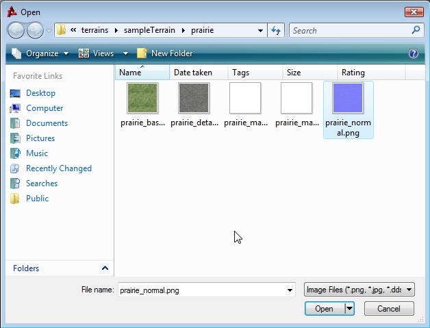
Your final material properties should look like the following:

Repeat this process until each opacity layer has a material assigned to it. Back in the Import Terrain Height Map dialog, click on the import button. It will take a few moments for Torque 3D to generate the terrain data from our various assets. When the import process is complete, the new TerrainBlock will be added to your scene (you might need to move your camera back to see it).
(click to enlarge)
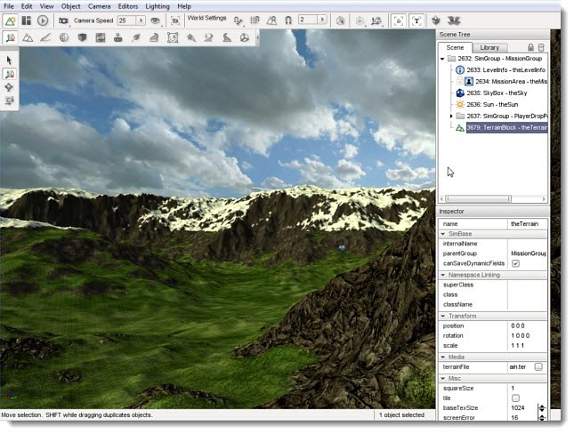
If you zoom in close to where materials overlap, you can notice the high quality detail and smooth blending that occurs.
(click to enlarge)
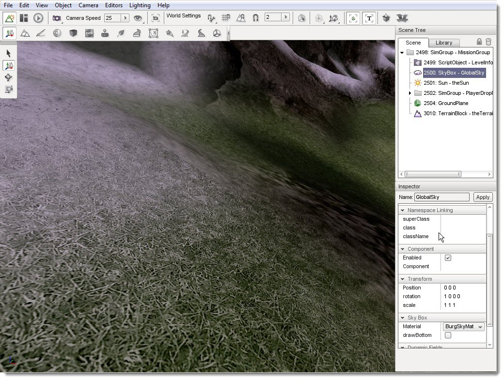
TerrainBlock Properties
A TerrainBlock has properties which can be set like any other object using the Object Editor. Clicking a TerrainBlock in the scene or selecting it from the Scene Tree will update the Inspector pane with information about it. TerrainBlocks have their own unique set of properties. Hover over a section of the image below for a description of the properties in that section:
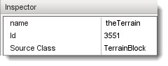name: TypeName. Optional global name of this object.
id : TypeCaseString. SimObjectId of this object. Read Only.
Source Class : TypeCaseString. Source code class of this object. Read Only.', WIDTH, 450)" onmouseout="UnTip()" >
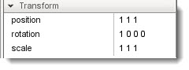position: MatrixPosition. Object world position.
rotation : MatrixOrientation. Object world orientation.
scale : Point3F. Object world scale.', WIDTH, 450)" onmouseout="UnTip()" >
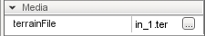terrainFile: TypeStringFilename. The source terrain data file.', WIDTH, 450)" onmouseout="UnTip()" >
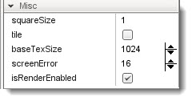squareSize: TypeF32. Indicates the spacing between points on the XY plane on the terrain.
tile : TypeBool. Toggles infinite tiling of terrain.
baseTexSize : TypeS32. Size of base texture size per meter.
screenError : TypeS32. Not yet implemented.
isRenderEnabled: TypeBool. Only render if true (and if class is render-enabled, too).', WIDTH, 450)" onmouseout="UnTip()" >
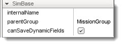canSaveDynamicFields: typeBool. True if dynamic fields (added at runtime) should be saved, defaults to true.
internalName : TypeString. Non-unique name used by child objects of a group.
parentGroup : TypeString. Group object belongs to.', WIDTH, 450)" onmouseout="UnTip()" />
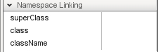superClass: TypeString. Links object to script super class (parent) namespace.
class: TypeString. Links object to script class namespace.
className: TypeString. Legacy version of class field.
', WIDTH, 450)" onmouseout="UnTip()" >
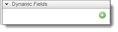(n/a): *. No stock dynamic values.', WIDTH, 450)" onmouseout="UnTip()" >
Conclusion
This article showed you the three methods available to add a TerrainBlock to your level: creating a blank terrain, adding an existing .ter file, and importing a heightmap. Regardless of which method you use to add the TerrainBlock to a level, you can continue to adjust it using the Terrain Editor and Terrain Painter tools.
Additionally, the system allows you to add multiple TerrainBlocks to the same level. This can provide you with a number of opportunities to create massive levels while retaining rendering quality and details. If you wish to learn more about terrains, you can read the Building Terrains Tutorial, which contains
more information on importing a terrain.
|
{kind=link}
{kind=link}
{kind=link}
{kind=link}
{kind=link}
{kind=link}